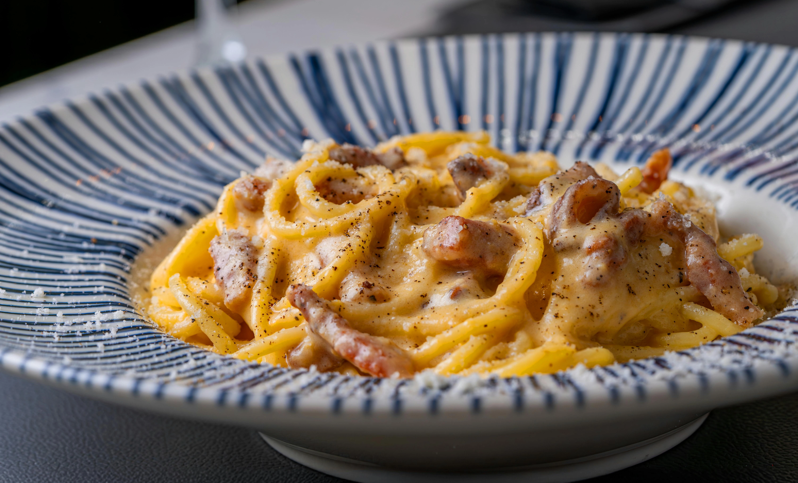

Recipe for Carbonara:
Things, that you have to buy:
- Spaghetti pasta
- Bacon
- Eggs
- Cheese
Recipe:
- Boil pasta for 10min.
- Fry bacon on the pan
- Mix cheese with pepper and eggs
- Add mixture to bacon
Pasta ranking from this week:
| Carbonara | 520 likes (a Winner!) |
| Bolognese | 480 likes |
| Spinach pasta | 200 likes |